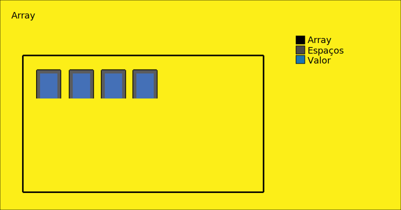

Estruturas de controle
Para manipular o nosso programa e obter um resultado esperado podemos utilizar algumas estruturas de controle que
funcionam de maneira a nos guiar dentro de um programa, por isso nessa aula iremos entender o funcionamento dessas
estruturas e discorreremos também sobre alguns operadores que são utilizados geralmente em conjunto com essas estruturas.
Vamos iniciar entendendo um pouco sobre como funciona o esqueleto, a lógica por trás de uma estrutura de controle, e
para isso, imagine como na imagem, um valor A e B, onde se A for maior que B a primeira saída será executada, no caso
um bloco de código qualquer será executado, se A não for maior que B, a segunda saída será executada exibindo uma mensagem
na tela para o usuário.
Assim funcionam as estruturas de controle, ou seja, baseado em uma decisão temos o controle de toda a estrutura de um programa.
If else
A primeira e a mais clássica estrutura de controle que iremos aprender é if else, do inglês "se senão", tem um funcionamento muito simples, "se" uma condição for satisfeita, tudo que estiver dentro do if será satisfeito, "senão" tudo que estiver dentro do else será satisfeito, observe logo abaixo a sua sintaxe e um exemplo de utilização de um if else:
Acima temos declarada uma variável que recebe um nome, lembre-se, essa variável é do tipo String pois recebe um texto entre aspas,
em seguida temos a estrutura de controle que recebe uma condição passada por parâmetro, ela diz que se o nome for diferente de indefinido,
ou seja, se o nome existir será exibida uma caixa alert contendo uma saudação ao usuário, do contrário, se o nome não existir, se não for
satisfeita a condição, o else será executado passando a mensagem "condição não atendida."
Experimente iniciar a variável nome sem atribuir nada a ela, somente com 'var nome;' nesse caso ocorrerá que o nome não foi definido e
consequentemente a estrutura deve retornar else, "condição não atendida".
If else if
A estrutura de decisão if ainda possui uma variante, utilizamos no primeiro exemplo a estrutura básica de if, sendo if else, ou se senão, mas também temos o que chamamos de if aninhado, nesse podemos criar uma "árvore de decisões", isso é, que não será limitada somente ao bloco if ou else, como no exemplo abaixo:
No exemplo acima, a estrutura verifica, se o nome for igual a "Roberto", retornará "nota 8" em um alert, senão, se o nome for igual a "Lucas", retornará "nota 7", senão (se o nome não for igual a Roberto e nem Lucas) o retorno será "não encontrado", em resumo, if(se), else(senão) if aninhado else if(senão se), assim é o seu funcionamento, você pode aninhar um if quantas vezes precisar, mas existe outros tipos de estruturas que podem ser usadas e são mais interessantes de serem usadas quando temos que criar uma "árvore de decisão" maior.
Switch Case
Em paralelo ao if, temos switch que também trata-se de uma estrutura de decisão, ambos podem realizar o mesmo trabalho mas existe algumas particularidades entre eles, neste caso switch pode trabalhar com uma árvore ou estrutura maior, e quando temos estruturas maiores o mais recomendado é utilizar switch e não if, todavia ambos podem realizar as mesmas tarefas, confira logo abaixo a sintaxe esperada de uma estrutura switch:
Switch recebe a nossa variável nome como parâmetro, caso o nome passado como parâmetro for igual ao nome passado como uma string para case,
tudo o que estiver dentro daquele case será executado, logo é retornado "Nota 6" pois a string presente na variável nome é igual a string passada
para o primeiro case, se você mudar o nome para "Lisa", por exemplo, a nota retornada será de "Nota 6.5".
Todo case deve acompanhar dois pontos no final de sua declaração, seguido um código qualquer, nesse caso do retorno de uma mensagem que é seguido
de "break" sendo que esse deve estar acompanhado de ponto e vírgula, case nos diz que se caso o valor passado como parâmetro for satisfeito por aquele
valor numérico ou string passada, tudo que estiver dentro deste será executado, break é utilizado para finalizar a sequência de código, quando o
break é encontrado o switch é finalizado.
Você pode criar diversos "cases" contendo algum valor, perceba que esse trecho com switch faz o mesmo que nós fizemos com if aninhado,
por fim default, ao final de switch, sempre no final, retorna um valor padrão se nenhum dos "cases" for satisfeito, default também deve
ser acompanhado de break, tente passar um valor totalmente diferente do que temos em case ou até mesmo uma variável nome sem valor declarado
nesse caso o bloco default será executado, pois executada a estrutura nenhuma das condições serão satisfeitas.
Operadores
Você deve ter notado que em todos esses exemplos em que utilizamos uma estrutura de controle, tivemos que incluir um operador para que este realizasse
um teste lógico que estabeleceria um valor, sendo ele verdadeiro(true) ou falso(false) e de acordo com esse valor uma decisão diferente seria tomada, no
primeiro exemplo, em "if else" definimos um nome e em seguida dizemos que se este nome estiver definido, ou seja, for diferente de "undefined" portanto
verdadeiro, um alert contendo uma mensagem de saudação seria exibida passando o nome, caso contrário, false, um alert contendo a mensagem "condição não
atendida!" seria exibido.
Neste caso o operador de diferenciação representado por "!=" realizou um teste lógico dentro da estrutura de controle if, mas existem outros operadores
que podem ser utilizado para realizar a mesma verificação, veja a tabela de operadores abaixo:
| Operador | Comparação | Exemplo | Leitura | Retorno |
|---|---|---|---|---|
| > | Maior | 1 > 2 | 1 maior que 2 | false |
| < | Menor | 1 < 2 | 1 menor que 2 | true |
| >= | Maior ou igual | 1 >= 2 | 1 maior ou igual a 2 | false |
| <= | Menor ou igual | 1 <= 2 | 1 menor ou igual a 2 | true |
| != | Diferente | 1 != 2 | 1 diferente de 2 | true |
| !== | Estritamente Diferente | 1 !== 2 | 1 estritamente diferente de 2 | true |
| == | Igual | 1 == 2 | 1 igual a 2 | false |
| === | Estritamente Igual | 1 === 2 | 1 estritamanete igual a 2 | false |
Veja um exemplo prático do uso de operadores lógicos, vamos criar uma estrutura de decisão if que terá como objetivo decidir: Se o pagamento foi realizado, faça um envio, senão, aguarde a confirmação do pagamento.
Podemos fazer a mesma verificação com o operador de diferenciação passando false, isto é, se o pagamento é diferente de false assume-se que ele seja verdadeiro e portanto terá o mesmo comportamento do código anterior.
Você provavelmente já ouvir falar sobre código binário, onde existe zero e um, onde o primeiro representa false e o segundo true de forma semelhante vamos trabalhar aqui, usando o valor 0 para representar false e 1 para representar true, veja o próximo exemplo, utilizando o operador maior e menor:
Do mesmo modo temos o mesmo tipo de verificação utilizando o operador menor, ambos atendem as mesmas necessidades.
Já os operadores de estritamente diferente e igual funcionam de maneira diferente, estritamente diferente faz o mesmo que diferente, no
entanto ele verifica se o valor é diferente em todos os aspectos, se 1 é diferente de 2, se o tipo de variável em que 1 foi declarado é
diferente do tipo de variável em que 2 foi declarado, faz uma verificação muito mais ampla, profunda e o mesmo ocorre com estritamente igual.
É importante que seja ressaltado, o uso do operador de igualação, '=' é diferente de '==', no primeiro temos o que chamamos de atribuição, como
já falamos aqui no curso, no segundo temos uma igualação, [A = 3] aqui ocorre uma atribuição, onde A vale 3, [A == 3] aqui uma verificação,
onde é perguntado se A é igual a 3, como não é o retorno é false.
Existe, também alguns operadores dos quais podemos trabalhar além dos já citados aqui, são eles o && (e/and) e || (ou/or) veja um exemplo do uso
destes operadores
Neste primeiro exemplo usando o operador && (and) criamos uma variável chamada carteira onde armazenamos o valor que o usuário possui na sua conta,
em seguida temos carro e preço, carro armazena o modelo e preço armazena o valor do carro, utilizamos if passando duas verificações, se o carro corresponder
ao modelo 'BMW' e o valor armazenado na carteira for maior ou igual ao preço do carro, logo este será encomendado.
Nesse caso se nenhuma das condições for atendida, isso é, se o modelo não for igual a 'BMW' e o valor armazenado na carteira não for maior ou pelo menos
igual ao preço do carro, logo ele não será encomendado.
Usando o operador || (or) temos que, se o carro for igual a 'BMW' ou igual a 'Audi', se for igual a pelo menos uma destas marcas é retornado true em seguida temos uma verificação && (and) confira abaixo a tabela de valores para estes operadores.
| Operador | Comparação | Exemplo | Leitura | Retorno |
|---|---|---|---|---|
| && | e/and | 1 && 2 != 3 | 1 e 2 diferente de 3 | true |
| || | ou/or | 1 || 2 > 3 | 1 ou 2 maior que 3 | false |
Array/Vetor
Arrays servem como um contâiner, usando um exemplo clássico para explicar como funciona uma array seria basicamente grande estacionamento onde existem diversas vagas "reservadas" apenas esperando pelos carros que serão responsáveis por ocupar essas vagas, mantenha esse exemplo em mente as arrays neste exemplo podem ser vistas sendo representadas pelo próprio estacionamento em si e uma array pode armazenar valores, valores esses que ocupam um espaço dentro das arrays, os valores podem ser interpretados como sendo os carros e os espaços como sendo as vagas.
Vamos ver como isso funciona na prática criando uma array que irá receber alguns valores, e ainda vamos aprender a retornar esses valores com base na sua posição dentro da array, vamos usar do mesmo exemplo do capítulo anterior de Operadores, simplesmente iremos criar uma array que vai armazenar os valores do exemplo anterior observe:
Para criar uma array devemos antes declarar uma variável e atribuir a ela uma array usando colchetes, dessa maneira já teremos uma array, são os colchetes
que define que o que estamos criando é uma array, no exemplo foi passado os valores para dentro da array, no caso o valor de "600000", o modelo do carro "BMW"
e por fim o valor disponível na carteira de "500000".
É ai que o exemplo começa a fazer sentido, a array representada por tudo que está dentro dos colchetes é o estacionamento, as vagas são representadas por cada
dado que está sendo armazenado por vírgula, nesse caso a vírgula funciona como um separador que delimita até onde vai determinado valor e claro, o valor em si
que representa os carros são os tipos de variáveis passadas para cada "vaga", como na sequência do exemplo temos: number, string, number ou seja "600000", "BMW"
e "500000", você pode passar quantos valores quiser e de diversos tipos, abaixo é passado uma array contendo os dados de um usuário...
Você acabou de aprender a criar uma array e passar valores para ela, mas e se você quiser retornar esses valores, afinal de nada adianta ter uma array armazenando valores que não serão usados certo? Bom, nesse caso para arrays temos o que chamamos de índice, o índice é a posição em que se encontra determinado valor dentro da sua array, na programação o índice sempre vai começar com zero e o zero vai representar o primeiro valor guardado em uma array.
Tendo isso em mente vamos retornar os valores dentro da array no console:
Para retornar os valores devemos chamar a variável que recebe a array seguido de colchetes que recebe o índice, a posição do valor que você quer retornar.
Esse assunto é de fato bem extenso, mas não se preocupe, arrays são o primeiro baque que enfrentamos e é normal ficar um pouco confuso com a sua implementação e o seu
uso, a prática é a chave, pratique muito esse conteúdo e não fique preso somente a uma fonte de informação, eu gosto muito de esclarecer as coisas, muitos "professores"
por ai te ensinam o método, mas não te dão exemplos práticos de como usar aquilo no seu dia a dia, no final o conteúdo que você estudou acaba ficando esquecido porque
você não entendeu direito a sua utilização ou simplesmente recorre a outros meios de fazer a mesma coisa.
Estrutura de repetição
Neste capítulo iremos entender um pouco do funcionamento das estruturas de repetição, elas são muito úteis quando queremos percorrer por algum valor e fazer uma verificação
com base nele.
For/Para, a primeira estrutura de repetição que iremos estudar trata-se de For ou Para em português, também chamado de loop for têm como objetivo fazer um loop, uma repetição
enquanto a condição passada for atendida, na figura abaixo temos a estrutura do loop for onde nele passamos uma condição que caso seja atendida, retorne (true) irá executar um
comando e logo em seguida, ao término da execução, irá realizar um loop ou seja, rodar novamente essa verificação até que a condição resulte em (false) nesse caso o loop for será
encerrado.
Na prática temos que, usando a mesma array criada anteriormente, o loop for recebe como parâmetro uma variável "i" que é iniciada com o valor de zero, logo em seguida temos uma comparação, onde o for irá comparar se "i" é menor que a quantidade de dados ou index da array, a variável "dados" sozinha retorna a array com todos os seus valores, quando passamos o método "length" a ela, a mesma retornará agora o comprimento da nossa array ou seja, quantos valores a array possui e esses valores são retornados à partir da sua index, como explicamos em array, dando prosseguimento, como último parâmetro "i" será incrementado e todos os valores dentro da variável dados serão retornados passando "dados[i]", é como se nós estivessemos retornando: dados[0], dados[1], dados[2], dados[3] e dados[4]
For entende que a variável "i" é igual a zero, em seguida compara o valor de "i" (zero) e se esse valor for menor que a quantidade de valores presentes na array que no total se somados são 5, [0], [1], [2], [3] e [4], logo ele compara "i" é menor que [0], não então ele faz o incremento de "i" e retorna o dado passando [i]
Try Catch Finally
Finalizando esse módulo temos Try Catch que é usado no tratamento de erros dentro do nosso código (tratamento de erros)
- Estruturas de controle
- If else
- If else if
- Switch Case
- Operadores
- Array/Vetor
- Estrutura de repetição
- Try Catch Finally